건축산업기사 (2012-05-20 기출문제)
1과목: 건축계획
1. 미술실이 주당 20시간 사용되고 있는 중학교에서 1주간의 평균 수업시간은?(단, 미술실의 이용률은 50%이다.)
- 20시간
- 25시간
- 30시간
- 40시간
(정답률: 79%)

2. 주택의 거실 계획에 관한 설명으로 옳지 않은 것은?
- 거실은 평면계획상 통로나 홀로서 사용되도록 한다.
- 식당, 계단, 현관 등과 같은 다른 공간과의 연계를 고려해야 한다.
- 거실과 정원은 유기적으로 시각적 연결을 하여 유동적인 감각을 갖게 한다.
- 개방된 공간에서 벽면의 기술적인 활용과 자유로운 가구의 배치로서 독립성이 유지되도록 한다.
(정답률: 87%)
3. 상점의 판매방식 중 대면방식에 관한 설명으로 옳지 않은 것은?
- 상품을 설명하기에 용이한 방식이다.
- 판매원의 고정 위치를 정하기가 용이하다.
- 상품의 진열면적이 측면판매방식에 비해 감소된다.
- 상품을 포장할 경우 별도의 공간 확보가 요구된다.
(정답률: 79%)
4. 학교 건축에서 단층교사에 관한 설명으로 옳지 않은 것은?
- 화재 및 재해 시 피난이 용이하다.
- 학습활동의 실외 연장이 가능하다.
- 구조계획이 단순하며, 내진 및 내풍구조가 용이하다.
- 대지의 이용률이 높으며 집약적인 평면계획이 용이하다.
(정답률: 83%)
5. 다음 중 상점 건축에서 쇼윈도우(Show window)의 반사를 방지하기 위한 방법과 가장 거리가 먼 것은?
- 쇼윈도우 내부의 조도를 외부보다 높게 한다.
- 캐노피를 설치하여 쇼윈도우 외부에 그늘을 조성한다.
- 쇼윈도우를 경사지게 하거나 특수한 경우 곡면유리로 처리한다.
- 야간의 경우 광원을 노출시키거나 시야에 입사하는 광속을 크게 한다.
(정답률: 77%)
6. 한식주택과 양식주택에 관한 설명으로 옳지 않은 것은?
- 한식주택은 목조가구식으로 바닥이 높다.
- 한식주택은 각 실이 단일용도로 되어 있다.
- 한식주택은 좌식생활이며, 양식주택은 입식생활이다.
- 한식주택의 가구는 부차적 존재이며, 양식주택의 가구는 중요한 내용물이다.
(정답률: 83%)
7. 공동주택의 단면형식에 따른 분류에 해당하는 것은?
- 판상형
- 집중형
- 메조넷형
- 테라스형
(정답률: 71%)
8. 무창공장에 관한 설명으로 옳지 않은 것은?
- 창을 설치하지 않으므로 건설비가 줄어든다.
- 공조 시 냉난방 부하가 적어 비용이 적게 든다.
- 외부로부터 자극이 적어 작업 능률이 향상된다.
- 실내에서의 소음 발생이 적어 쾌적한 근무환경 조성이 용이하다.
(정답률: 86%)
9. 사무소 건축의 엘리베이터 계획에 관한 설명으로 옳은 것은?
- 대향 배치의 경우 최소 6.5m 이상의 폭을 둔다.
- 사무소의 주출입구 홀에 직접 면하지 않도록 배치한다.
- 엘리베이터의 대수는 아침 출근시간의 피크 5분간을 기준으로 산정한다.
- 1개소에 연속하여 6대를 설치할 경우 직선형(일렬형)으로 배치하는 것이 좋다.
(정답률: 59%)
10. 학교의 교사배치형식 중 폐쇄형에 관한 설명으로 옳지 않은 것은?
- 화재 및 비상시에 피난상 불리하다.
- 일조, 통풍 등 환경 조건이 불균등하다.
- 구조계획이 간단하나 상당히 넓은 부지가 필요하다.
- 운동장에서 발생하는 소음이 교실에 영향을 미친다.
(정답률: 76%)
11. 편복도형 아파트에 관한 설명으로 옳지 않은 것은?
- 복도를 통하여 각 주호의 프라이버시가 침해받기 쉽다.
- 엘리베이터 1대당 이용 주호 수가 계단실형에 비해 적다.
- 각 세대의 방위를 동일하게 함으로서 거주성이 균일한 배치유형이 가능하다.
- 계단 및 엘리베이터가 직접적으로 각 층에 연결되며, 복도에서 각 세대로 접근하는 유형이다.
(정답률: 79%)
12. 상점의 숍프론트(Shop front) 형식을 개방형, 폐쇄형, 혼합형으로 분류할 경우, 다음 중 개방형의 적용이 가장 곤란한 상점은?
- 서점
- 제과점
- 일용품점
- 귀금속점
(정답률: 84%)
13. 주방과 식당이 한 실로 되어 있는 DK형에 관한 설명으로 옳지 않은 것은?
- 소규모 주택에 적합한 형식이다.
- 식당을 중심으로 한 단란한 생활형에 적합하다.
- 거실 겸 침실은 전용되는 온돌방으로 하는 경우가 많다.
- 식사와 취침은 분리하지만 단란은 취침하는 곳과 겹칠 수 있다.
(정답률: 48%)
14. 다음 중 사무소 건축의 기준층 평면 형태에 영향을 미치는 요소와 가장 관계가 먼 것은?
- 구조상 스팬의 한도
- 덕트, 배선, 배관 등 설비 시스템상의 한계
- 자연광에 의한 조명의 한계
- 지하 주차장의 주차간격
(정답률: 57%)
15. 공동주택의 형식 중 듀플렉스(Duplex)형에 관한 설명으로 옳지 않은 것은?
- 화재 발생 시 피난에 대한 고려가 필요하다.
- 통로가 없는 층은 프라이버시의 확보가 용이하다.
- 평면 구성의 제약이 적으며, 소규모 주택에 적용이 용이하다.
- 엘리베이터의 정지층 및 통로면적의 감소로 전용면적의 극대화를 도모할 수 있다.
(정답률: 75%)
16. 사무소 건축의 실 단위계획 중 개방식 배치에 관한 설명으로 옳지 않은 것은?
- 개인의 독립성 확보가 용이하다.
- 전면적을 유용하게 이용할 수 있다.
- 방의 길이나 깊이에 변화를 줄 수 있다.
- 공사비가 개실 시스템보다 저렴하다.
(정답률: 84%)
17. 공장 건축의 지붕형태에 관한 설명으로 옳지 않은 것은?
- 솟을지붕은 채광 및 환기에 적합하다.
- 뾰족지붕은 어느 정도 직사광선을 허용하는 단점이 있다.
- 샤렌구조에 의한 지붕은 기둥이 적게 소요되는 장점이 있다.
- 톱날지붕은 채광창을 서향으로 한 경우 하루 종일 변함없는 조도가 제공된다.
(정답률: 68%)
18. 다음 설명에 알맞은 사무소 건축의 코어의 유형은?
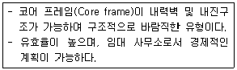
- 중심코어형
- 편심코어형
- 독립코어형
- 양단코어형
(정답률: 83%)
19. 상점의 공간을 판매공간, 부대공간 등으로 구분할 경우, 다음중 판매공간에 해당하지 않는 것은?
- 통로공간
- 서비스공간
- 상품관리공간
- 상품전시공간
(정답률: 77%)
20. 연립주택의 종류 중 타운 하우스에 관한 설명으로 옳지 않은 것은?
- 배치상의 다양성을 줄 수 있다.
- 프라이버시 확보는 조경을 통하여서도 가능하다.
- 토지 이용 및 건설비, 유지관리비의 효율성을 고려한 형식이다.
- 일반적으로 각 세대마다의 주차가 불가능하므로 공동의 주차공간이 필요하다.
(정답률: 72%)
2과목: 건축시공
21. 고강도 콘크리트의 설계기준강도는 보통 콘크리트에서 최소얼마 이상인가?
- 27MPa
- 30MPa
- 35MPa
- 40MPa
(정답률: 67%)
22. 대형 판유리를 사용하여 유리만으로 벽면을 구성하는 공법은?
- 퍼티고정공법
- 실링공법
- 가스켓고정공법
- 서스펜션공법
(정답률: 63%)
23. 다음 ( ) 안에 가장 적합한 용어는?
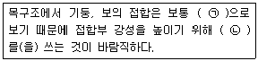
- ㉠ 강접합, ㉡ 가새
- ㉠ 강접합, ㉡ 샛기둥
- ㉠ 핀접합, ㉡ 가새
- ㉠ 핀접합, ㉡ 샛기둥
(정답률: 75%)
24. 지반조사의 지내력시험에 관한 설명으로 옳지 않은 것은?
- 하중시험용 재하판은 정방형 또는 원형의 면적 0.2m2의 것을 표준으로 한다.
- 시험은 예정 기초 저면에 행한다.
- 장기하중에 대한 허용지내력은 단기하중 허용지내력의 1/2이다.
- 매회 재하는 10t 이하 또는 예정파괴 하중의 1/2 이하로 한다.
(정답률: 55%)
25. 다음 중 인조석 마감의 종류가 아닌 것은?
- 인조석 갈아내기 마감
- 인조석 잔다듬 마감
- 인조석 혹두기 마감
- 인조석 씻어내기 마감
(정답률: 52%)
26. 일반적으로 현장에 도착한 공장배합 레미콘의 품질시험으로 가장 거리가 먼 것은?
- 강도시험
- 슈미트해머시험
- 공기량시험
- 슬럼프시험
(정답률: 63%)
27. 네트워크(Network) 공정표의 장점이라고 볼 수 없는 것은?
- 작업 상호 간의 관련성을 알기 쉽다.
- 공정계획의 작성시간이 단축된다.
- 공사의 진척 관리를 정확히 실시할 수 있다.
- 공기단축이 가능한 요소의 발견이 용이하다.
(정답률: 75%)
28. 두께 1.0B의 벽돌벽을 쌓을 경우 표준형 벽돌의 1m2당 정미량(매)과 점토벽돌 할증률(%) 및 시멘트벽돌 할증률(%)은 각각 얼마인가?
- 정미량 : 130매, 점토벽돌 : 3%, 시멘트벽돌 : 5%
- 정미량 : 130매, 점토벽돌 : 5%, 시멘트벽돌 : 3%
- 정미량 : 149매, 점토벽돌 : 3%, 시멘트벽돌 : 5%
- 정미량 : 149매, 점토벽돌 : 5%, 시멘트벽돌 : 3%
(정답률: 62%)
29. 건물의 외부 수리 등에 사용되는 비계로 가장 적당한 것은?
- 겹비계
- 쌍줄비계
- 외줄비계
- 달비계
(정답률: 57%)
30. 건축공사의 원가 계산에서 현장에서의 공사용수비는 어느 항목에 포함되는가?
- 직접가설비
- 공통가설비
- 외주비
- 노무비
(정답률: 62%)
31. 크롬산아연을 안료로 하고, 알키드수지를 전색료로 한 것으로 알루미늄 녹막이 초벌칠에 적당한 도료는?
- 광명단
- 징크로메이트(Zincromate)
- 그라파이트(Graphite)
- 파커라이징(Parkerizing)
(정답률: 66%)
32. 다음 석재 중 화성암계가 아닌 것은?
- 화강암
- 석회암
- 안산암
- 석영조면암
(정답률: 59%)
33. 기초의 비탈면 거푸집 면적 계상의 결정 기준이 되는 비탈면 각도는?
- 15°
- 30°
- 45°
- 60°
(정답률: 59%)
34. 건설공사의 조사, 설계, 감리, 기술관리 등에 관한 기본적인 사항과 건설업의 등록 및 건설공사의 도급 등에 필요한 사항을 정한법은?
- 건설산업기본법
- 산업안전보건법
- 엔지니어링 산업 진흥법
- 국가기술자격법
(정답률: 85%)
35. 플라스틱 바름 바닥재 중 공기 중의 수분과 화학반응하는 경우 저온과 저습에서 경화가 늦으므로 5℃ 이하에서 촉진제를 사용하는 것은?
- 에폭시수지
- 아크릴수지
- 폴리우레탄
- 클로로프렌고무
(정답률: 65%)
36. 목조 지붕틀의 각 부재와 보강철물이 서로 잘못 연결된 것은?
- 평보와 깔도리 - 주걱볼트
- 왕대공과 평보 - 안장쇠
- 평보와 ㅅ자보 - 볼트
- 왕대공과 ㅅ자보 - 띠쇠
(정답률: 49%)
37. 층단으로 만들어서 장식 및 음향효과를 갖도록 하고 전기조명 장치도 간접조명으로 할 수 있는 반자는?
- 살대반자
- 우물반자
- 구성반자
- 건축판반자
(정답률: 47%)
38. 다음 각 철물들이 사용되는 곳으로 옳지 않은 것은?
- 논슬립(Non slip) - 계단
- 코너비드(Corner bead) - 바닥
- 피벗(Pivot) - 창호
- 메탈라스(Metal lath) - 벽
(정답률: 81%)
39. 목재의 이음 중 휨을 받는 가로재의 내이음으로 구부림(휨)에 가장 효과적인 것은?
- 엇걸이이음
- 메뚜기장이음
- 주먹장이음
- 턱솔이음
(정답률: 61%)
40. 다음 거푸집공사에 관한 설명 중 옳지 않은 것은?
- 거푸집 존치기간은 시멘트의 종류, 기온, 천후, 보양 등의 상태에 따라 다르다.
- 거푸집 강도 계산 시 콘크리트 중량, 작업 및 충격하중을 적용한다.
- 거푸집공사에 사용되는 격리재(Separator)는 거푸집 해체 시 콘크리트에서 잘 떨어지도록 하기 위한 것이다.
- 벽체나 기둥 거푸집에 작용하는 콘크리트의 측압은 일정 높이 이상되면 상승하지 않는다.
(정답률: 56%)
3과목: 건축구조
41. 철근콘크리트 구조물에서 철근의 최소 피복두께를 규정하는 이유로 가장 거리가 먼 것은?
- 콘크리트의 인장강도 확보
- 철근의 부식 방지
- 철근의 내화
- 철근의 부착
(정답률: 64%)
42. 다음 그림과 같은 겔버보에서 D점에 작용하는 휨모멘트의 값은?
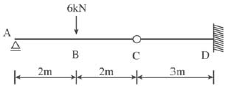
- -9kNㆍm
- -12kNㆍm
- 6kNㆍm
- 30kNㆍm
(정답률: 46%)
43. 탄성하중법의 원리를 적용시킬 수 있도록 단부의 조건을 변화 시켜 처짐을 구하는 방법은?
- 3연 모멘트법
- 처짐각법
- 모멘트 분해법
- 공액(共扼)보법
(정답률: 60%)
44. 60kN의 압축력을 받는 소나무 원형기둥의 최소 지름으로 옳은 것은?(단, 허용압축응력도는 6MPa이다.)
- 100.3mm
- 112.8mm
- 152.4mm
- 176.4mm
(정답률: 35%)
45. 다음 중 단면의 성질에 관한 설명으로 옳지 않은 것은?
- 단면2차반경의 제곱에 단면적을 곱하면 단면1차모멘트이다.
- 도심축에 대한 단면2차모멘트를 압축 측 거리 또는 인장 측 거리로 나눈 값을 단면계수라 한다.
- 단면1차모멘트가 0인 점을 단면의 도심이라 하며, 도심은 그 단면의 면적 중심이 된다.
- 단면계수의 단위는 cm3, m3 등이며, 부호는 항상 (+)이다.
(정답률: 56%)
46. 다음과 같은 두개의 힘의 O점에 대한 모멘트의 크기는?
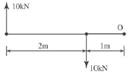
- 0
- 10kNㆍm
- 20kNㆍm
- 30kNㆍm
(정답률: 41%)
47. 강도설계법에 의한 휨부재 설계 시 기본 가정 중 옳지 않은 것은?
- 콘크리트의 응력은 직사각형 응력 분포로 볼 때 중립축으로부터 거리에 정비례한다.
- 극한강도 상태에서 콘크리트의 압축 측 연단의 최대변형률은 0.003으로 한다.
- 콘크리트의 변형률은 중립축으로부터 거리에 비례한다.
- 철근의 극한변형률은
 로 본다.
로 본다.
(정답률: 46%)
48. 기초 형식의 선정에 대한 설명으로 옳지 않은 것은?
- 구조성능, 시공성, 경제성 등을 검토하여 합리적으로 기초 형식을 선정하여야 한다.
- 기초는 상부구조의 규모, 형상, 구조, 강성 등을 함께 고려해야 하고, 대지의 상황 및 지반의 조건에 적합하며, 유해한 장애가 생기지 않아야 한다.
- 동일 구조물의 기초에서는 이종형식 기초의 병용을 원칙으로 한다.
- 기초 형식의 선정 시 부지 주변에 미치는 영향을 충분히 고려하여야 하며 또한 장래 인접대지에 건설되는 구조물과 그 시공에 의한 영향까지도 함께 고려하는 것이 바람직하다.
(정답률: 81%)
49. 그림과 같은 구조물의 판별로 옳은 것은?(오류 신고가 접수된 문제입니다. 반드시 정답과 해설을 확인하시기 바랍니다.)
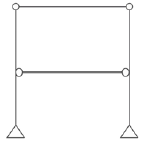
- 안정, 정정
- 안정, 1차 부정정
- 안정, 2차 부정정
- 불안정
(정답률: 58%)
50. 그림과 같은 캔틸레버보에서 집중하중 P가 작용하는 자유단에 생기는 처짐은?(단, 부재의 EI는 일정)
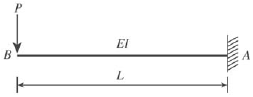
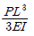
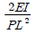
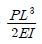
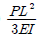
(정답률: 58%)
51. 다음 중 PC구조의 특성이 아닌 것은?
- 기계화 시공으로 공기가 단축된다.
- 동계공사가 가능하다.
- 가설물이 적게 요구된다.
- 다양한 평면에 적합하며 접합부 강성이 뛰어나다.
(정답률: 49%)
52. 경간의 길이가 4,000mm인 단순지지된 1방향 슬래브의 처짐을 계산하지 않는 경우의 최소 두께는?(단, 리브가 없는 슬래브, 보통콘크리트 사용, fy=400MPa)
- 200mm
- 220mm
- 235mm
- 250mm
(정답률: 49%)
53. 강도설계법에 의하여 다음 그림과 같은 철근콘크리트보를 설계할 때 등가응력블록깊이 a는?(단, fck=24MPa, fy=400MPa, D22철근 1개의 단면적은 387mm2임.)
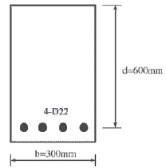
- 101.2mm
- 111.2mm
- 121.2mm
- 131.2mm
(정답률: 60%)
54. 길이가 10m이고, 단면이 3×3cm인 정사각형 단면의 강재에 인장력이 작용하여 길이가 0.6cm, 폭 0.0006cm 변형되었다. 이때 강재의 포아송비는?
- 1/2
- 1/3
- 1/3.5
- 1/4
(정답률: 58%)
55. 그림과 같은 장방형 보에서 x-x축에 대한 단면2차반경은?
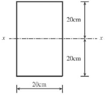
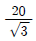
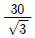
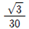
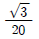
(정답률: 50%)
56. 지반의 단기허용지내력도가 30kN/m2일 때 장기허용지내력도는?
- 15kN/m2
- 20kN/m2
- 45kN/m2
- 60kN/m2
(정답률: 36%)
57. 그림과 같은 캔틸레버에서 D점의 휨모멘트는?
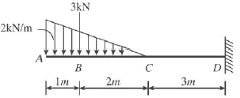
- -15kNㆍm
- -20kNㆍm
- -25kNㆍm
- -30kNㆍm
(정답률: 35%)
58. 그림에서 A지점의 반력 RA의 값으로 옳은 것은?
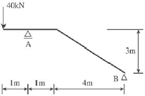
- 40kN
- 44kN
- 48kN
- 52kN
(정답률: 54%)
59. 직접설계법을 사용하여 슬래브시스템을 설계하려고 할 때의 제한사항 중 옳지 않은 것은?
- 각 방향으로 3경간 이상이 연속되어야 한다.
- 각 방향으로 연속한 받침부 중심 간 경간 길이의 차이는 긴 경간의1/3 이하이어야 한다.
- 연속한 기둥중심선으로부터 기둥의 이탈은 이탈방향 경간의 최대 10%까지 허용된다.
- 슬래브들의 단변경간에 대한 장변경간의 비가 2 이상이어야 한다.
(정답률: 31%)
60. 극한강도설계법에서 Vs=210kN, d=500mm, fyt=300MPa, Av=254mm2(U형, 2-D13)일 때 수직 스터럽의 간격으로 가장 적당한 것은?
- 150mm
- 180mm
- 200mm
- 250mm
(정답률: 43%)
4과목: 건축설비
61. 다음 중 증기압축식 냉동기에 속하지 않는 것은?
- 터보식 냉동기
- 왕복동식 냉동기
- 스크류식 냉동기
- 흡수식 냉동기
(정답률: 57%)
62. 다음은 옥내소화전의 화재안전기준에 관한 내용이다. ( )안에 알맞은 것은?
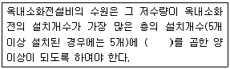
- 1.3m3
- 2.6m3
- 5m3
- 7m3
(정답률: 76%)
63. 진공환수식 증기난방에 관한 설명으로 옳지 않은 것은?
- 리프트피팅의 사용이 불가능하다.
- 환수가 원활하고 신속하게 이루어진다.
- 진공펌프는 일반적으로 전동식이 사용된다.
- 관경이 가늘어지고 배관구배를 작게 할 수 있다.
(정답률: 44%)
64. 중앙식 급탕방식 중 간접가열식에 관한 설명으로 옳지 않은 것은?
- 일반적으로 규모가 큰 건물에 사용된다.
- 가열보일러는 난방용보일러와 겸용할 수 없다.
- 저탕조는 가열코일을 내장하는 등, 직접가열식에 비해 구조가 복잡하다.
- 증기보일러 또는 고온수보일러를 사용하는 경우 고온의 탕을 얻을 수 있다.
(정답률: 74%)
65. 피뢰침의 주요구조부에 속하지 않는 것은?
- 돌침부
- 피뢰도선
- 접지전극
- 리미트 스위치
(정답률: 67%)
66. 분전반에 관한 설명으로 옳지 않은 것은?
- 간선의 인출이 용이한 곳에 설치한다.
- 부하의 중심에 위치하는 것이 바람직하다.
- 분전반에는 배관이 집중되도록 한다.
- 분전반 1개로 공급하는 범위는 1,000m2 정도가 적당하다.
(정답률: 48%)
67. 다음의 각종 통기관에 관한 설명 중 옳지 않은 것은?
- 습통기관은 통기의 목적 외에 배수관으로도 이용되는 부분을 말한다.
- 도피통기관은 배수, 통기계통 간의 공기의 유통을 원활히 하기 위해 설치하는 통기관을 말한다.
- 각개통기관은 2개 이상인 기구트랩의 봉수를 모두 보호하기 위하여 공통으로 설치하는 하나의 통기관을 말한다.
- 신정통기관은 최상부의 배수수평관이 배수수직관에 접속된 위치 보다 더욱 위로 배수수직관을 끌어올려 대기 중에 개구하여 통기관으로 사용되는 부분을 말한다.
(정답률: 66%)
68. 건구온도 30℃인 건공기 1kg에 수증기가 0.015kg이 포함된 습공기의 엔탈피는?(단, 건공기의 정압비열=1.01kJ/kgㆍK, 수증기의 정압비열=1.85kJ/kgㆍK, 0℃에서 포화수의 증발잠열=2,501kJ/kg이다.)
- 58.65kJ/kg
- 68.65kJ/kg
- 78.65kJ/kg
- 88.65kJ/kg
(정답률: 46%)
69. 열관류율 K=2W/m2ㆍK인 벽체의 양쪽 공기온도가 각각 22℃, -3℃일 때, 이 벽체 1m2당 이동되는 열량은?
- 25W
- 50W
- 75W
- 100W
(정답률: 58%)
70. 펌프에 관한 설명으로 옳은 것은?
- 펌프의 토출량은 펌프 회전수에 비례한다.
- 펌프의 양정은 펌프 회전수에 반비례한다.
- 터보형펌프 중 비속도가 큰 펌프는 양정변화가 큰 용도에 사용할 수 없다.
- 건축설비분야에서는 피스톤펌프와 같은 왕복식펌프가 주로 사용된다.
(정답률: 51%)
71. 온수난방방식에 관한 설명으로 옳지 않은 것은?
- 증기난방에 비해 예열시간이 짧다.
- 증기난방에 비해 소요방열면적이 크다.
- 증기난방에 비해 비교적 높은 쾌감도를 얻을 수 있다.
- 증기난방에 비해 난방부하의 변동에 따른 온도조절이 용이하다.
(정답률: 69%)
72. 다음 설명에 알맞은 자동화재탐지설비의 감지기는?
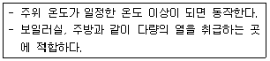
- 광전식 감지기
- 정온식 감지기
- 차동식 감지기
- 이온화식 감지기
(정답률: 75%)
73. 전압강하(Voltage drop)에 관한 설명으로 옳은 것은?
- 저항이 적은 전선을 사용하면 전압강하는 커진다.
- 전선의 단면적에 비례하므로 전선을 가늘게 하면 전압강하가 발생하지 않는다.
- 전압강하가 크면 전등은 광속이 감소하고 전동기는 토크가 감소한다.
- 전선에 전류가 흐를 때 전선의 임피던스로 인하여 전원 측 전압보다 부하 측 전압이 커지는 현상이다.
(정답률: 55%)
74. 다음 중 온수난방 배관 시에 역환수 방식(Reverse return)을 채택하는 가장 주된 이유는?
- 배관경을 가늘게 하기 위해서
- 배관 신축을 흡수하기 위해서
- 중력으로 온수를 순환시키기 위해서
- 온수를 방열기에 균등히 분배하기 위해서
(정답률: 77%)
75. 각종 급수방식에 관한 설명 중 옳은 것은?
- 수도직결방식은 건물의 높이에 관계가 없다.
- 고가수조방식은 급수압력의 변동이 가장 크다.
- 압력탱크방식은 수질오염 가능성이 가장 적다.
- 탱크가 없는 부스터방식은 정전 시 급수가 불가능하다.
(정답률: 78%)
76. 100V에서 10A가 흐르는 전열기에 120V를 가하면 흐르는 전류는 몇 A인가?
- 8
- 10
- 12
- 20
(정답률: 66%)
77. 다음의 소방시설 중 경보설비에 속하지 않는 것은?
- 비상방송설비
- 자동화재속보설비
- 자동화재탐지설비
- 무선통신보조설비
(정답률: 73%)
78. 다음의 건축설비에 관한 용어의 조합 중 옳지 않은 것은?
- PBX-전기시계설비
- LAN-구내정보통신망
- VAN-부가가치통신망
- ISDN-종합정보서비스망
(정답률: 59%)
79. 조명의 단위에 대한 상호 연결이 옳지 않은 것은?
- 1(ph)=103(lx)
- 1(sb)=1(cd/cm2)
- 1(nt)=1(cd/m2)
- 1(lx)=1(lm/m2)
(정답률: 48%)
80. 다음 중 보일러의 능력을 나타내는 데 사용되는 정격출력을 가장 알맞게 나타낸 것은?
- 난방부하+배관손실
- 난방부하+급탕부하
- 난방부하+급탕부하+배관손실
- 난방부하+급탕부하+배관손실+예열부하
(정답률: 63%)
5과목: 건축관계법규
81. 도시, 군계획 수립대상 지역의 일부에 대하여 토지이용을 합리화하고 그 기능을 증진시키며 미관을 개선하고 양호한 환경을 확보하여, 그 지역을 체계적, 계획적으로 관리하기 위하여 수립하는 도시, 군관리계획은?
- 국가계획
- 지구단위계획
- 광역도시계획
- 도시, 군기본계획
(정답률: 71%)
82. 주차장법상 다음과 같이 정의되는 것은?
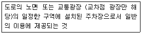
- 노외주차장
- 노면주차장
- 노상주차장
- 부설주차장
(정답률: 71%)
83. 다음은 건축선에 따른 건축제한과 관련된 기준 내용이다. ( )안에 알맞은 것은?
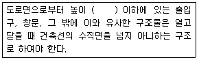
- 3m
- 3.5m
- 4m
- 4.5m
(정답률: 69%)
84. 생산녹지지역과 자연녹지지역 안에서 모두 건축할 수 없는 건축물은?
- 아파트
- 수련시설
- 노유자시설
- 제1종 근린생활시설
(정답률: 77%)
85. 건축물의 지하층 중 직통계단 외에 피난층 또는 지상으로 통하는 비상탈출구 및 환기통을 설치하여야 하는 층의 거실 바닥면적기준은?(단, 직통계단이 2개소 이상 설치되어 있는 경우 제외)
- 33m2 이상
- 50m2 이상
- 85m2 이상
- 100m2 이상
(정답률: 52%)
86. 다음과 같은 건축물의 높이는?(단, 건축면적 400m2, 옥탑의 수평투영면적 40m2이다.)
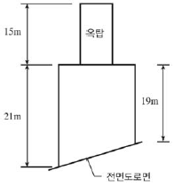
- 21m
- 23m
- 35m
- 36m
(정답률: 68%)
87. 다음은 공동주택에 설치하는 환기설비에 관한 기준 내용이다. ( ) 안에 알맞은 것은?(단, 100세대 이상의 공동주택이며, 기숙사 제외)(관련 규정 개정전 문제로 여기서는 기존 정답인 2번을 누르면 정답 처리됩니다. 자세한 내용은 해설을 참고하세요.)
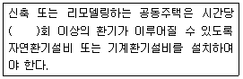
- 0.5
- 0.7
- 1.0
- 1.2
(정답률: 14%)
88. 바닥면적이 300m2인 학교의 교실에 채광을 위하여 설치하여야 하는 창문의 최소면적은?(단, 창문으로만 채광을 하는 경우)
- 10m2
- 15m2
- 20m2
- 30m2
(정답률: 57%)
89. 다음과 같은 대지에서 도로 모퉁이 부분의 건축선으로 인하여 대지면적에서 제외되는 면적은?
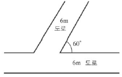
- 4√3m2
- 4√5m2
- 8m2
- 8√5m2
(정답률: 49%)
90. 건축물에 설치하는 방화벽의 구조에 관한 기준 내용으로 옳은 것은?
- 내화구조로서 홀로 설 수 있는 구조이어야 한다.
- 방화벽에 설치하는 출입문의 너비는 2.7m 이하로 하여야 한다.
- 방화벽에 설치하는 출입문의 높이는 2.7m 이하로 하여야 한다.
- 방화벽의 양쪽 끝과 위쪽 끝을 건축물의 외벽면 및 지붕면으로부터 최소 0.7m 이상 튀어나오게 하여야 한다.
(정답률: 65%)
91. 주차대수 규모가 50대 미만인 노외주차장 출입구의 최소너비는?
- 3.3m
- 3.5m
- 4.5m
- 5.5m
(정답률: 60%)
92. 다음은 건축물의 냉방설비에 관한 기준 내용이다. ( ) 안에 알맞은 것은?
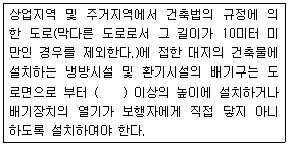
- 0.5m
- 1.0m
- 1.5m
- 2.0m
(정답률: 64%)
93. 다음 중 허가대상에 해당하는 용도변경은?
- 교육 및 복지시설군 → 영업시설군으로 변경
- 영업시설군 → 주거업무시설군으로 변경
- 전기통신시설군 → 문화 및 집회시설군으로 변경
- 문화 및 집회시설군 → 교육 및 복지시설군으로 변경
(정답률: 48%)
94. 노외주차장에 설치하여야 하는 차로의 최소너비가 가장 작은 주차형식은?(단, 출입구가 2개 이상인 경우)
- 교차주차
- 60° 대향주차
- 직각주차
- 평행주차
(정답률: 73%)
95. 건축허가신청에 필요한 설계도서 중 배치도에 표시하여야 할 사항에 해당하지 않는 것은?
- 축척 및 방위
- 승강기의 위치
- 대지의 종, 횡단 단면도
- 주차동선 및 옥외주차계획
(정답률: 66%)
96. 비상용 승강기를 설치해야 하는 대상 건축물 기준으로 옳은 것은?
- 높이 6m를 초과하는 건축물
- 높이 16m를 초과하는 건축물
- 높이 31m를 초과하는 건축물
- 높이 41m를 초과하는 건축물
(정답률: 60%)
97. 건축물의 건축허가신청 시 에너지절약계획서를 제출하여야 하는 건축물에 해당하는 것은?
- 단독주택으로서 그 용도에 사용되는 바닥면적의 합계가 500m2인 건축물
- 동물원으로서 그 용도에 사용되는 바닥면적의 합계가 500m2인 건축물
- 냉방 및 난방 설비를 설치하지 않은 공장으로서 당해 용도에 사용되는 바닥면적의 합계가 500m2인 건축물
- 운동시설 중 실내수영장으로서 당해 용도에 사용되는 바닥면적의 합계가 500m2인 건축물
(정답률: 54%)
98. 다음 중 주차전용건축물에 해당하지 않는 것은?
- 주차장으로 사용되는 부분의 비율이 70%이며, 주차장 외의 용도로 사용되는 부분이 의료시설인 건축물
- 주차장으로 사용되는 부분의 비율이 70%이며, 주차장 외의 용도로 사용되는 부분이 업무시설인 건축물
- 주차장으로 사용되는 부분의 비율이 70%이며, 주차장 외의 용도로 사용되는 부분이 제1종근린생활시설인 건축물
- 주차장으로 사용되는 부분의 비율이 70%이며, 주차장 외의 용도로 사용되는 부분이 제2종근린생활시설인 건축물
(정답률: 65%)
99. 다음의 피난계단 설치와 관련된 기준 내용 중 ( ) 안에 알맞은 것은?(단, 갓복도식 공동주택은 제외)
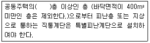
- 6
- 11
- 16
- 21
(정답률: 44%)
100. 건축법령에 따른 건축물의 용도 분류에서 공동주택에 해당하지 않는 것은?
- 기숙사
- 연립주택
- 다중주택
- 다세대주택
(정답률: 72%)